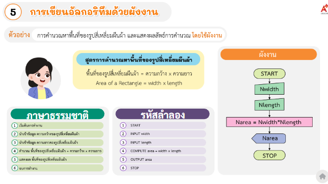
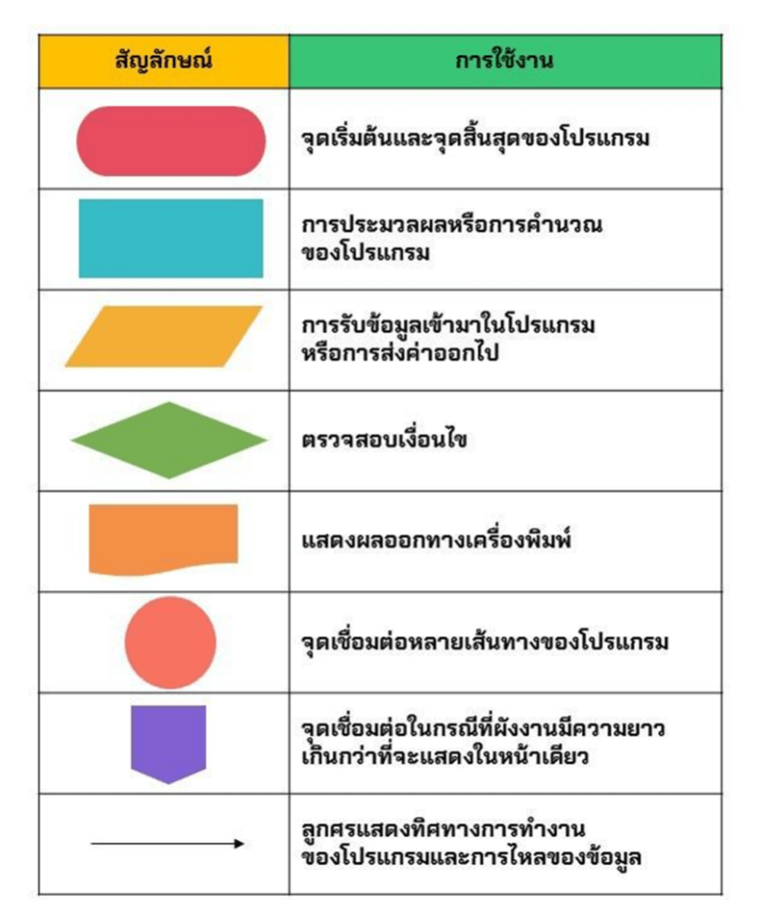
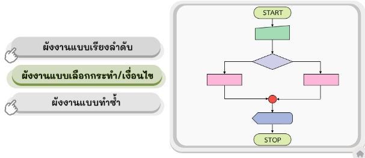
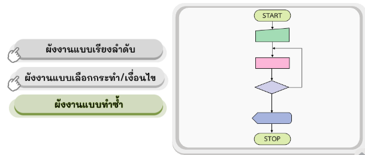
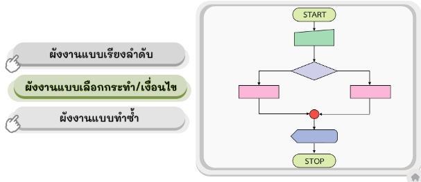
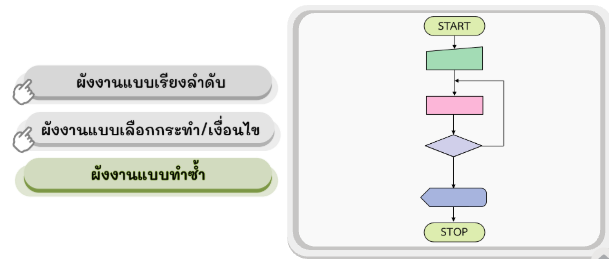

แนวคิดเชิงนามธรรม (Abstraction) – หัวใจของการแก้ปัญหา
แนวคิดเชิงนามธรรม คือกระบวนการ คัดแยกรายละเอียดที่ไม่สำคัญออกไป และ คงไว้เฉพาะสาระสำคัญ ที่จำเป็นต่อการแก้ปัญหาเท่านั้น
จุดที่มักออกสอบ: ข้อสอบจะให้สถานการณ์มา แล้วถามว่าสิ่งใดคือสาระสำคัญ หรือสิ่งใดไม่ใช่สาระสำคัญ
ตัวอย่าง: การดูแผนที่รถไฟฟ้า สาระสำคัญคือ เส้นทาง และ สถานีเชื่อมต่อ ไม่ใช่อาคารหรือต้นไม้ข้างทาง

อัลกอริทึม (Algorithm) คืออะไร?
อัลกอริทึม คือ ลำดับขั้นตอนการแก้ปัญหาที่ชัดเจน ตั้งแต่เริ่มต้นจนจบ เพื่อให้มนุษย์หรือคอมพิวเตอร์สามารถทำตามได้อย่างถูกต้อง
คุณสมบัติของอัลกอริทึมที่ดี
- ขั้นตอนไม่กำกวม
- เรียงลำดับก่อน-หลังถูกต้อง
- ให้ผลลัพธ์ที่แม่นยำ

การถ่ายทอดความคิด (3 รูปแบบหลัก)
- ภาษาธรรมชาติ (Natural Language): เขียนอธิบายเป็นข้อ ๆ ด้วยภาษาคน
- รหัสลำลอง (Pseudocode): ใช้คำภาษาอังกฤษกึ่งภาษาโปรแกรม เช่น START, INPUT, PRINT
- ผังงาน (Flowchart): ใช้สัญลักษณ์รูปภาพแสดงลำดับขั้นตอน 
สัญลักษณ์ผังงาน (Flowchart Symbols)
- วงรี (Terminator): จุดเริ่มต้นและจุดสิ้นสุด
- สี่เหลี่ยมด้านขนาน (Input/Output): รับข้อมูลหรือแสดงผล
- สี่เหลี่ยมผืนผ้า (Process): การประมวลผลหรือคำนวณ
- สี่เหลี่ยมขนมเปียกปูน (Decision): การตรวจสอบเงื่อนไข 
โครงสร้างการทำงานของอัลกอริทึม
- Sequence: ทำงานเรียงจากบนลงล่าง
- Selection: เลือกทำตามเงื่อนไข
- Iteration / Loop: ทำซ้ำจนกว่าเงื่อนไขจะเปลี่ยน
 



การแตกปัญหาย่อย (Decomposition)
คือการแบ่งปัญหาที่ซับซ้อนออกเป็นส่วนย่อย เพื่อให้ง่ายต่อการออกแบบอัลกอริทึม
ตัวอย่างข้อสอบ: การปูหญ้าในสนาม → หาพื้นที่ → คำนวณจำนวนแผ่น → เผื่อวัสดุ
การพิจารณารูปแบบ (Pattern Recognition)
คือการมองหารูปแบบที่ซ้ำกันของปัญหา เพื่อให้สามารถเขียนอัลกอริทึมให้สั้นและมีประสิทธิภาพมากขึ้น